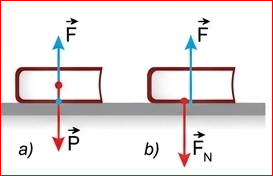
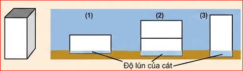
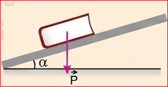
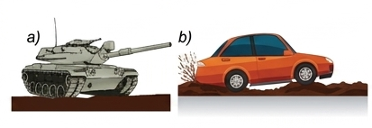
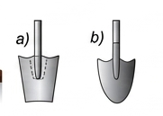
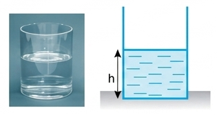
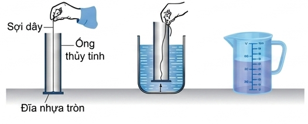
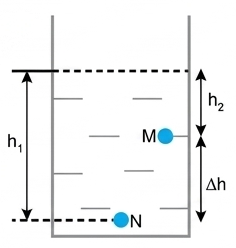
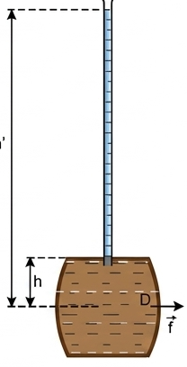

Khối lượng riêng của một chất là khối lượng của một đơn vị thể tích chất đó:
Khối lượng riêng = Khối lượng / Thể tích
\( \rho = \frac{m}{V} \)
(34.1)
Đơn vị của khối lượng riêng trong hệ SI là \( kg/m^3 \). Người ta cũng dùng đơn vị khối lượng riêng là \( g/cm^3 \).
Bảng 34.1. Khối lượng riêng của một số chất ở điều kiện bình thường
| Chất | \( \rho \text{ } (kg/m^3) \) |
|---|---|
| Chì | 11 300 |
| Đồng | 8 900 |
| Thép | 7 800 |
| Thủy ngân | 13 500 |
| Nước | 999 |
Bảng 34.2. Khối lượng riêng của nước ở các nhiệt độ khác nhau
| Nhiệt độ | \( \rho \text{ } (kg/m^3) \) |
|---|---|
| \( 20^\circ C \) | 999 |
| \( 40^\circ C \) | 992 |
| \( 60^\circ C \) | 983 |
| \( 80^\circ C \) | 972 |
1. Tại sao khối lượng riêng của một chất lại phụ thuộc vào nhiệt độ?
2. Một hợp kim đồng và bạc có khối lượng riêng là \( 10,3 \text{ } g/cm^3 \). Tính khối lượng của bạc và đồng có trong 100 g hợp kim. Biết khối lượng riêng của đồng là \( 8,9 \text{ } g/cm^3 \), của bạc là \( 10,4 \text{ } g/cm^3 \).
Câu 1: Khi nhiệt độ thay đổi, các chất thường co giãn (sự nở vì nhiệt) làm thể tích \( V \) của vật thay đổi. Vì khối lượng \( m \) của vật không đổi nên theo công thức \( \rho = m/V \), khi \( V \) thay đổi thì khối lượng riêng \( \rho \) sẽ thay đổi.
Câu 2: Gọi \( m_1, V_1 \) là khối lượng, thể tích của đồng; \( m_2, V_2 \) là của bạc.
Ta có tổng khối lượng: \( m_1 + m_2 = 100 \text{ (g)} \) (1)
Thể tích hợp kim: \( V = V_1 + V_2 \Rightarrow \frac{100}{10,3} = \frac{m_1}{8,9} + \frac{m_2}{10,4} \) (2)
Từ (1) rút \( m_2 = 100 - m_1 \) thay vào (2) và giải hệ phương trình ta được:
\( m_1 \approx 6,06 \text{ g} \) (Đồng) và \( m_2 \approx 93,94 \text{ g} \) (Bạc).
a) Khái niệm áp lực
Một cuốn sách nằm yên trên mặt bàn nằm ngang chịu tác dụng của hai lực cân bằng là lực hút của Trái Đất và lực đẩy của mặt bàn.
Lực \( F_N \) ép lên mặt bàn theo phương vuông góc với mặt bàn, được gọi là áp lực.

Hình 34.1b) Áp lực phụ thuộc những yếu tố nào?

Hình 34.2. Thí nghiệm độ lún của khối kim loại trên cátHãy dựa vào thí nghiệm vẽ ở Hình 34.2, cho biết độ lớn của áp lực phụ thuộc vào những yếu tố nào và phụ thuộc như thế nào.
Qua thí nghiệm, ta thấy tác dụng của áp lực (thể hiện qua độ lún của cát) càng mạnh khi:

Hình 34.41. Trong Hình 34.3, lực nào sau đây là lực đàn hồi, lực ma sát, áp lực?
2. Chứng minh rằng áp lực của cuốn sách tác dụng lên mặt bàn nằm nghiêng một góc \( \alpha \) (Hình 34.4) có độ lớn là: \( F_N = P \cos \alpha \).
Câu 1:
Câu 2: Phân tích trọng lực \( \vec{P} \) của cuốn sách thành 2 thành phần:
Dựa vào hệ thức lượng trong tam giác vuông tạo bởi các vectơ lực, ta có góc giữa \( \vec{P} \) và \( \vec{P}_n \) chính là góc \( \alpha \). Do đó \( P_n = P \cos \alpha \).
Vậy độ lớn áp lực là \( F_N = P_n = P \cos \alpha \).
Do tác dụng của áp lực lên mặt bị ép càng mạnh khi cường độ của áp lực càng lớn và diện tích mặt bị ép càng nhỏ, nên để đặc trưng cho tác dụng của áp lực người ta dùng khái niệm áp suất, có độ lớn bằng áp lực chia cho diện tích bị ép.
Áp suất = Áp lực / Diện tích bị ép
\( p = \frac{F_N}{S} \)
(34.2)
Đơn vị của áp suất là \( N/m^2 \), có tên gọi là paxcan (Pa):
Bảng 34.3. Độ lớn của một số áp suất
| Áp suất tại một số vị trí | p (Pa) |
|---|---|
| Áp suất ở tâm Trái Đất | \( 4 \cdot 10^{11} \) |
| Áp suất của nước ở đáy biển sâu nhất | \( 1,1 \cdot 10^8 \) |
| Áp suất của không khí trong lốp ô tô | \( 4 \cdot 10^5 \) |
| Áp suất khí quyển ở độ cao mặt nước biển | \( 1 \cdot 10^5 \) |

Hình 34.5
Hình 34.61. Tại sao xe tăng nặng hơn ô tô nhiều lần lại có thể chạy bình thường trên đất bùn (Hình 34.5a), còn ô tô bị lún bánh và sa lầy trên chính quãng đường này (Hình 34.5b)?
2. Trong hai chiếc xẻng vẽ ở Hình 34.6, xẻng nào dùng để xén đất tốt hơn, xẻng nào dùng để xúc đất tốt hơn? Tại sao?
3. Một người nặng 50 kg đứng trên mặt đất nằm ngang. Biết diện tích tiếp xúc của mỗi bàn chân với đất là \( 0,015 \text{ } m^2 \). Tính áp suất người đó tác dụng lên mặt đất khi:
a) Đứng cả hai chân.
b) Đứng một chân.
Câu 1: Xe tăng chạy bằng bản xích rất rộng nên diện tích tiếp xúc \( S \) với mặt đất rất lớn. Dù trọng lượng \( P \) của xe tăng rất lớn, nhưng do \( S \) lớn nên áp suất \( p = P/S \) truyền xuống mặt đất bùn nhỏ, giúp xe không bị lún. Ô tô dùng bánh xe có diện tích tiếp xúc nhỏ, nên áp suất gây ra lớn, dễ bị lún và sa lầy.
Câu 2:
- Xẻng đầu nhọn dùng để xén đất tốt hơn vì phần mũi nhọn có diện tích tiếp xúc rất nhỏ, khi ấn cùng một lực thì sẽ tạo ra áp suất rất lớn giúp lưỡi xẻng dễ dàng cắm sâu vào đất cứng.
- Xẻng đầu bằng (vuông) dùng để xúc đất tốt hơn vì diện tích bản xẻng lớn, múc được nhiều đất cùng lúc và giữ đất không bị rơi rớt hai bên.
Câu 3: Trọng lượng của người (đóng vai trò áp lực): \( F_N = P = m \cdot g = 50 \cdot 9,8 = 490 \text{ N} \) (lấy \( g = 9,8 \text{ } m/s^2 \)).
Khi đặt vật rắn lên mặt bàn thì vật rắn tác dụng lên mặt bàn áp suất theo phương vuông góc với mặt bàn. Khi nhấn chìm một vật vào trong nước thì nước có gây áp suất lên vật không? Nếu có thì áp suất này có giống áp suất của vật rắn không?
Ai lặn xuống nước cũng dễ cảm thấy áp suất của nước tác dụng lên cơ thể mình, càng lặn sâu thì áp suất càng mạnh. Tuy nhiên, áp suất này có phải chỉ tác dụng theo một phương như áp suất của vật rắn không?
Hãy dựa vào thí nghiệm với một bình cầu có các lỗ nhỏ ở thành bình trong các Hình 34.7a và 34.7b để nói về sự tồn tại áp suất của chất lỏng và đặc điểm của áp suất này so với áp suất của vật rắn.
Từ thí nghiệm, ta thấy khi ấn pit-tông (Hình a) hoặc nhúng bình vào nước (Hình b), nước phun ra khỏi các lỗ nhỏ theo mọi hướng vuông góc với thành bình.
Điều này chứng tỏ: Chất lỏng gây ra áp suất theo mọi phương lên đáy bình, thành bình và các vật ở trong lòng nó. Khác với vật rắn chỉ gây ra áp suất theo một phương duy nhất là phương của lực ép (thường là hướng từ trên xuống do trọng lượng).
Có thể xác định được công thức tính áp suất của chất lỏng dựa trên bài toán sau đây:
Một khối chất lỏng đứng yên có khối lượng riêng \( \rho \), hình trụ diện tích đáy \( S \), chiều cao \( h \) (Hình 34.8). Hãy dùng công thức tính áp suất ở trên để chứng minh rằng áp suất của khối chất lỏng trên tác dụng lên đáy bình có độ lớn là \( p = \rho \cdot g \cdot h \)

Hình 34.8Chứng minh:
Trên mặt thoáng của chất lỏng, còn có áp suất khí quyển \( p_a \). Áp suất này được chất lỏng truyền nguyên vẹn xuống đáy bình. Do đó, áp suất tổng cộng tại một điểm ở độ sâu \( h \) là:
\( p = p_a + \rho \cdot g \cdot h \)
Chất lỏng truyền áp suất theo mọi hướng nên áp suất mà ta tính được ở trên cũng là áp suất của chất lỏng tác dụng lên các điểm ở thành bình có khoảng cách tới mặt thoáng chất lỏng là \( h \).
Một khối hình lập phương có cạnh 0,30 m, khối lập phương chìm \( 2/3 \) trong nước. Biết khối lượng riêng của nước là \( 1000 \text{ } kg/m^3 \). Tính áp suất của nước tác dụng lên mặt dưới của khối lập phương và xác định phương, chiều, cường độ của lực gây ra bởi áp suất này.
Độ sâu của mặt dưới khối lập phương so với mặt thoáng:
\( h = \frac{2}{3} \cdot \text{cạnh} = \frac{2}{3} \cdot 0,30 = 0,20 \text{ m} \).
Áp suất của nước (chỉ tính áp suất cột chất lỏng) tác dụng lên mặt dưới:
\( p = \rho \cdot g \cdot h = 1000 \cdot 9,8 \cdot 0,20 = 1960 \text{ Pa} \).
Lực ép (Lực đẩy do áp suất gây ra) lên mặt dưới:

Hình 34.9. Thí nghiệm nghiệm lại công thức tính áp suấtHãy tìm cách dựa vào các dụng cụ thí nghiệm vẽ ở Hình 34.9 để nghiệm lại công thức tính áp suất của chất lỏng: \( p = \rho \cdot g \cdot h \).
Cách tiến hành:
Có thể dễ dàng tính được độ chênh lệch về áp suất của chất lưu giữa 2 điểm M và N có độ sâu \( h_1 \) và \( h_2 \) so với mặt thoáng của chất lưu đứng yên (Hình 34.10).
Vì \( p_N = p_a + \rho \cdot g \cdot h_1 \) và \( p_M = p_a + \rho \cdot g \cdot h_2 \)
nên \( p_N - p_M = \rho \cdot g \cdot (h_1 - h_2) \)
Phương trình cơ bản của chất lưu đứng yên
\( \Delta p = \rho \cdot g \cdot \Delta h \)
(34.3)

Hình 34.101. Tính độ chênh lệch áp suất của nước giữa 2 điểm thuộc 2 mặt phẳng nằm ngang cách nhau 20 cm.
2. Hãy dùng phương trình cơ bản của chất lưu đứng yên để chứng minh rằng áp suất ở các điểm nằm trên cùng mặt phẳng nằm ngang trong chất lỏng thì bằng nhau.
3. Hãy dùng phương trình cơ bản của chất lưu đứng yên để chứng minh định luật Archimedes đã học ở lớp 8 cho trường hợp vật hình hộp chữ nhật có chiều cao \( h \), làm bằng vật liệu có khối lượng riêng \( \rho \).
Câu 1: Độ chênh lệch độ sâu \( \Delta h = 20 \text{ cm} = 0,2 \text{ m} \). Khối lượng riêng của nước là \( \rho = 1000 \text{ } kg/m^3 \).
Độ chênh lệch áp suất: \( \Delta p = \rho \cdot g \cdot \Delta h = 1000 \cdot 9,8 \cdot 0,2 = 1960 \text{ Pa} \).
Câu 2: Các điểm nằm trên cùng một mặt phẳng nằm ngang trong chất lỏng có cùng độ sâu \( h \). Do đó chênh lệch độ sâu giữa hai điểm bất kỳ trên đó là \( \Delta h = 0 \).
Thay vào phương trình cơ bản \( \Delta p = \rho \cdot g \cdot \Delta h = \rho \cdot g \cdot 0 = 0 \Rightarrow p_1 - p_2 = 0 \Rightarrow p_1 = p_2 \).
Vậy áp suất tại các điểm này là bằng nhau.
Câu 3: Chứng minh Lực đẩy Archimedes:
Xét khối hộp chữ nhật có chiều cao \( h \), diện tích đáy \( S \), chìm hoàn toàn trong chất lỏng có khối lượng riêng \( \rho_l \).
Hãy dùng các dụng cụ sau đây:
Thiết kế phương án thí nghiệm minh họa cho phương trình cơ bản của chất lưu đứng yên.
Phương án thí nghiệm: Ý tưởng là ta sẽ dùng lực kế để đo lực đẩy Archimedes (vốn sinh ra từ chênh lệch áp suất hai mặt trên dưới), sau đó so sánh với lý thuyết tính từ phương trình cơ bản.
Phương trình cơ bản của thủy tĩnh học cho thấy sự chênh lệch của áp suất chất lỏng không phụ thuộc vào thể tích chất lỏng (tức lượng chất lỏng) mà chỉ phụ thuộc vào sự chênh lệch về độ sâu. Sự chênh lệch về áp suất với cùng một độ lớn trong một ống nước rất nhỏ, cũng giống như trong một hồ nước rộng, trong một đại dương.
Chỉ cần đổ khoảng 1 lít nước vào đầy một ống thủy tinh cao khoảng 10 m là đủ để gây ra áp suất làm vỡ toang thùng gỗ đựng đầy nước ở dưới (Thí nghiệm thùng gỗ Tô-nô của Pascal - Hình 34.11).

Hình 34.11Giải thích được vì sao người thợ lặn muốn lặn sâu dưới biển phải được trang bị thiết bị lặn chuyên dụng.
Bài 1:
Một thợ lặn xuống độ sâu 30 m so với mặt nước biển. Biết khối lượng riêng của nước biển là \( 1030 \text{ } kg/m^3 \) và gia tốc trọng trường \( g = 9,8 \text{ } m/s^2 \). Tính áp suất của nước biển tác dụng lên thợ lặn.
Áp dụng công thức tính áp suất chất lỏng: \( p = \rho \cdot g \cdot h \)
Thay số: \( p = 1030 \cdot 9,8 \cdot 30 = 302820 \text{ Pa} \)
Đáp số: Áp suất nước biển tác dụng lên thợ lặn là \( 302820 \text{ Pa} \) (hay xấp xỉ \( 3 \text{ atm} \)).
Bài 2:
Một khối thép đặc có dạng hình hộp chữ nhật, kích thước \( 10\text{cm} \times 20\text{cm} \times 50\text{cm} \). Đặt khối thép đứng thẳng trên mặt bàn ngang (mặt tiếp xúc là hình chữ nhật \( 10\text{cm} \times 20\text{cm} \)). Biết khối lượng riêng của thép là \( 7800 \text{ } kg/m^3 \). Tính áp suất khối thép tác dụng lên mặt bàn.
Đổi đơn vị: \( 10 \text{ cm} = 0,1 \text{ m} \); \( 20 \text{ cm} = 0,2 \text{ m} \); \( 50 \text{ cm} = 0,5 \text{ m} \).
Thể tích khối thép: \( V = 0,1 \cdot 0,2 \cdot 0,5 = 0,01 \text{ } m^3 \)
Khối lượng: \( m = \rho \cdot V = 7800 \cdot 0,01 = 78 \text{ kg} \)
Áp lực lên mặt bàn bằng trọng lượng: \( F_N = P = m \cdot g = 78 \cdot 9,8 = 764,4 \text{ N} \)
Diện tích mặt bị ép: \( S = 0,1 \cdot 0,2 = 0,02 \text{ } m^2 \)
Áp suất: \( p = \frac{F_N}{S} = \frac{764,4}{0,02} = 38220 \text{ Pa} \)
Cách khác ngắn gọn: Với khối hộp đồng chất thẳng đứng, áp suất đè lên đáy luôn là \( p = \rho g h_{cao} = 7800 \cdot 9,8 \cdot 0,5 = 38220 \text{ Pa} \).
Đáp số: \( 38220 \text{ Pa} \)
Bài 3:
Cần một lực bằng bao nhiêu để giữ một miếng bìa che kín một lỗ hổng tròn có bán kính 5 cm trên thành một tàu ngầm đang lặn ở độ sâu 50 m? (Bỏ qua áp suất không khí bên trong tàu).
Diện tích lỗ hổng tròn: \( S = \pi \cdot r^2 = 3,14 \cdot (0,05)^2 = 0,00785 \text{ } m^2 \)
Áp suất nước ở độ sâu 50m (tính lực ép từ ngoài vào): \( p = \rho \cdot g \cdot h = 1030 \cdot 9,8 \cdot 50 = 504700 \text{ Pa} \)
Lực đẩy của nước lên miếng bìa (chính là độ lớn của lực ta cần giữ từ bên trong):
\( F = p \cdot S = 504700 \cdot 0,00785 \approx 3961,9 \text{ N} \)
Đáp số: \( \approx 3961,9 \text{ N} \)